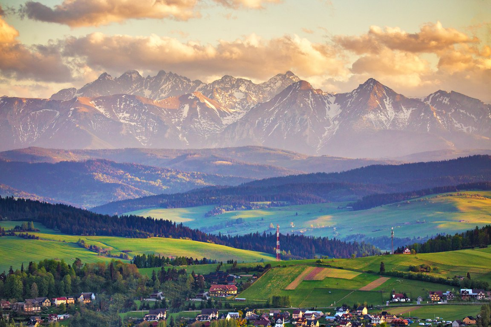

Slovakia
High Tatras

Via Tatra
Since last year (2025) I was thinking about a multiday trip throughout the High Tatras. This trip takes app. 3 days and walks over whole range.
The advantege is , that we will be always near to the other hikers and possible exit routes. We will be walkind on official/unofficial marked trails and we will be able to sleep in mountain huts.
Posibble accomodation over the route
My plan via only official marked trails (no licence required)
Route plan

- Day 1: Tri studničky - Chata pri Popradskom plese
- Day 2: Chata pri Popradskom plese - Zbojnícka chata
- Day 3: Zbojnícka chata - Chata pri Zelenom plese
- Day 4: Chata pri zelenom plese - Ždiar
In the link you find more details about the route.
There is a possibility to adjust the route to shortened the time and some km especially from Teryho chata to Chata pri Zelenom plese via Baranie sedlo, using unofficial marked trail as well as summit Malý ľadový štít. However using unofficial marked trails is more dangerous than officially and more welved routes.There is also a risk of meeting the conservationist , who can give you a fine for using unofficial marked trails.